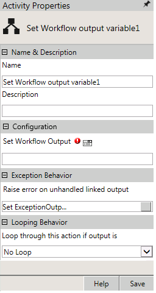

No
Activity description:
The Set Workflow output variable Activity can be used to set the output of the parent workflow from the child workflow.
Activity Properties:
The Set Workflow output variable activity has to be configured by specifying appropriate values for the different properties in the Activity Properties area. The Activity Properties can be accessed by clicking on the Activity Properties tool in the tool bar or by selecting the appropriate option from the right-click menu for the Set Workflow output variable activity. The Activity Properties are organized under the following groups of related properties. The properties under each group are described in this topic.

Name & Description
You can use these properties to specify the name and description for the activity.
Name - This property can be used to specify a name for the activity.
Property Type: Optional (This property needs to be set only if necessary.)
Description - This property specifies a brief description to be displayed for the activity.
Property Type: Optional (This property needs to be set only if necessary.)
Configuration
You can use this property to configure the functionality of the activity.
Set Workflow Output - This property specifies the output of the workflow. You can specify the output value directly here or click the icon to open the Expression Builder and build an expression for the output.
Property Type: Mandatory (This property must be set if the activity is to be executed.)
Looping Behavior
The property in the Looping Behavior group has been described below. You can use this property to specify the looping behavior of the activity.
Loop through this action if output is - This property is used to specify the condition for looping the activity by selecting an activity output from the drop down.
Property Type: Optional (This property needs to be set only if necessary.)
Activity outputs:
The Set Workflow output variable Activity returns the output value set in the Set Workflow Output property.
Example for setting Workflow Output Variable
Note: The user must declare a same variable name in the child workflow which was declared for the Parent workflow. In the above example, user must declare by the name "ParentWorkflowOutput" of type "String" in the child workflow.
'################ Lesser'
'################ Greater'
Summary : When you publish the parent workflow, the child workflow is also triggered and the path selected after the Rule activity is stored in the variable "ParentWorklfowOutput". The output of child workflow can be traced in the parent workflow.
Output: The ParentWF is published, and the workflow1 Activity invokes the ChildWF. Value of the variable Value is set to 1 in Update Variable Activity.
Since the value of Variable value is less then five, the rule activity output is False. so the Set Workflow Output Variable2 is executed and the control is passed to the ParentWF. The value updated in Parent Workflow variable is Lesser and hence the output of the Workflow Activity is Lesser and the Logger1 is executed.
Start Activity in BAM
Parent Workflow in BAM:
Child Workflow in BAM